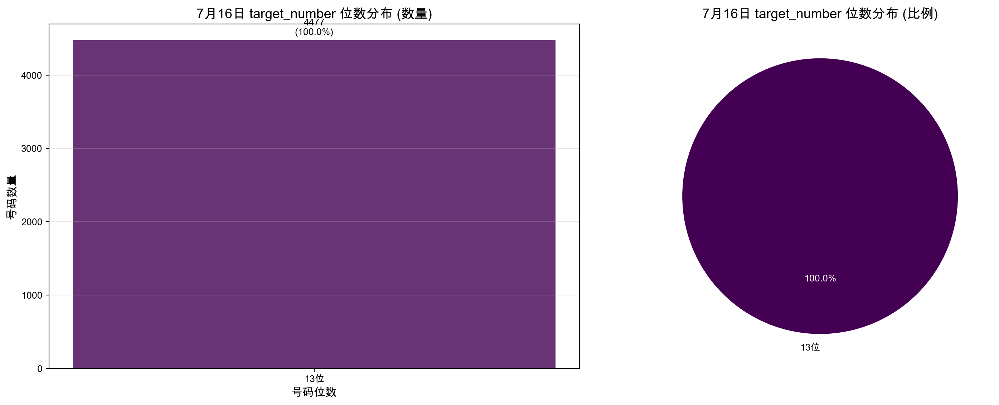
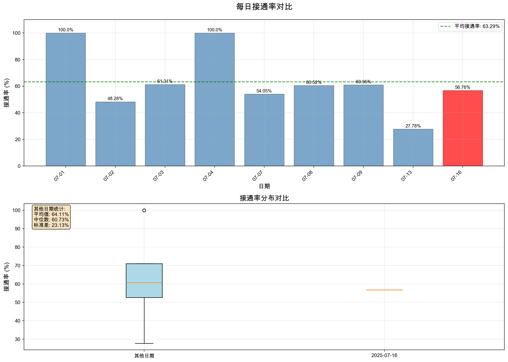
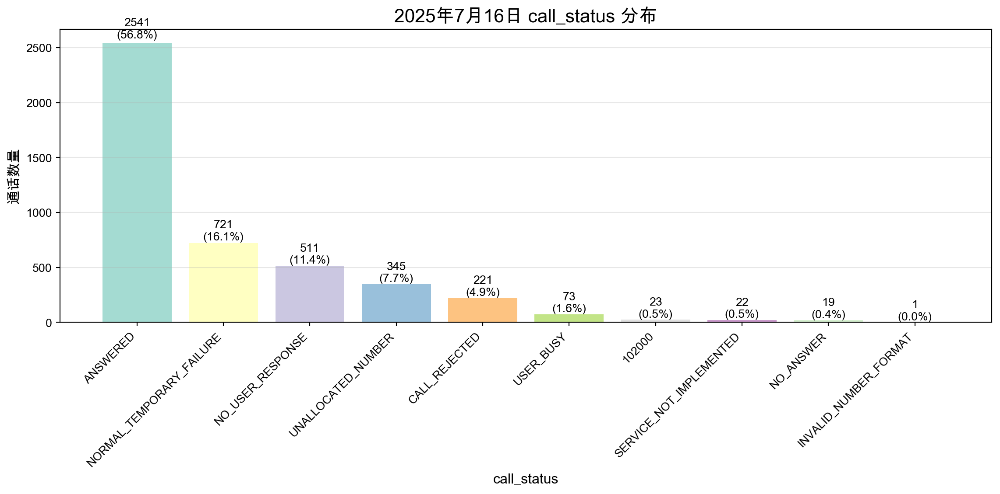
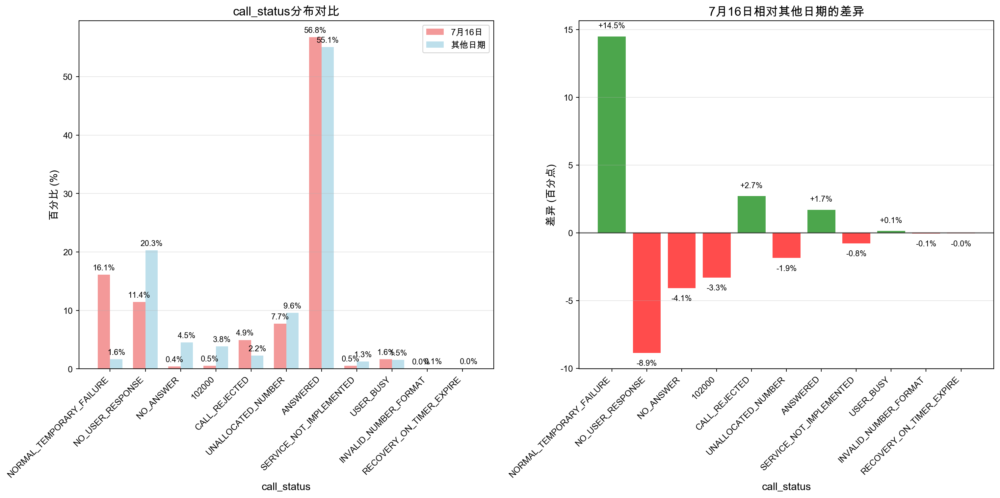
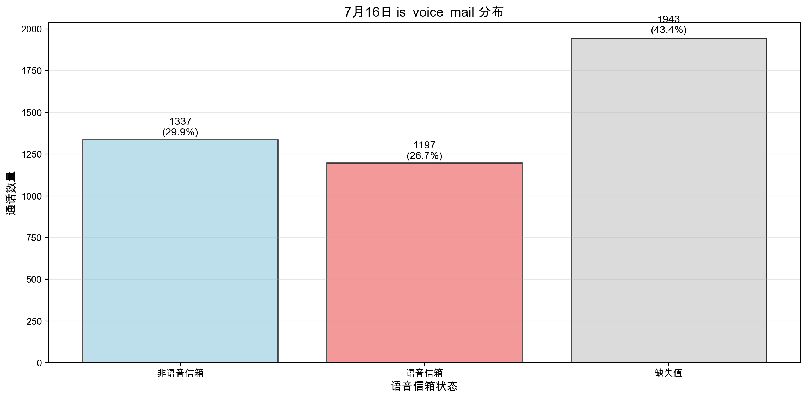
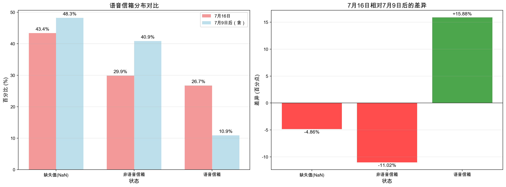
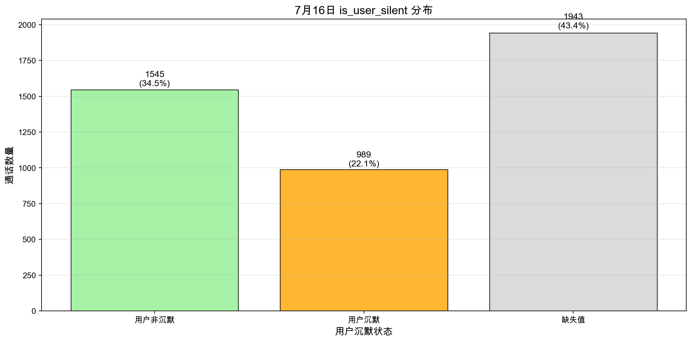
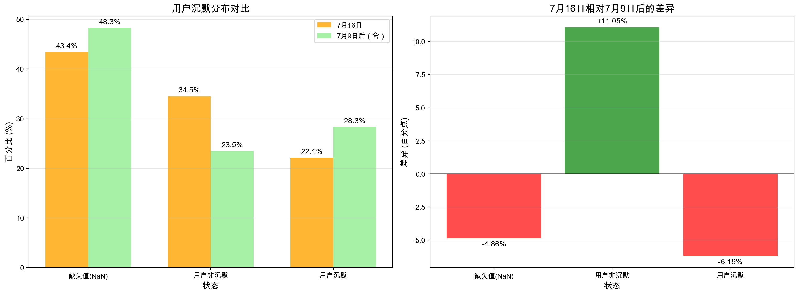
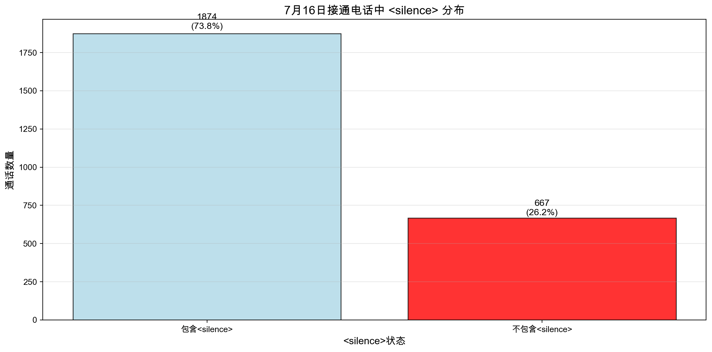
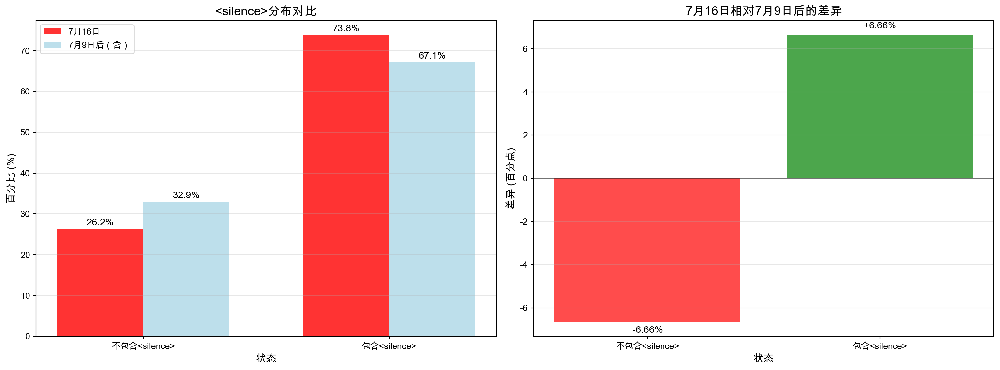

原始数据总量: 9637条
7月16日原始数据量: 7044条
7月16日筛选后数据量: 4477条
最终数据集总量: 7070条
7月16日各任务数据量:
- 716智能外呼1500: 1495条
- 716智能外呼1500三2: 1492条
- 716智能外呼1500二: 1490条数据分析报告
数据分析报告
重要说明：本分析中，对于7月16日的数据，我们只保留了以下三个特定任务的数据： - 716智能外呼1500 - 716智能外呼1500二 - 716智能外呼1500三2
其他日期的数据保持不变。这样做是为了确保分析结果的一致性和可比性。
H2: 线路拨通问题（未接通）
线路接通率
call_status话单是否=“ANSWERED”，7月16和其他的对比
target_number在7月16日的位数分布
=== 7月16日target_number位数分布分析 ===
2025年7月16日数据总量: 4477条
7月16日target_number位数分布:
----------------------------------------
位数 数量 百分比
----------------------------------------
13 4477 100.00%
----------------------------------------
📊 详细统计:
• 最短号码位数: 13位
• 最长号码位数: 13位
• 平均号码位数: 13.00位
• 最常见位数: 13位 (4477条, 100.00%)
📈 位数排行榜:
1. 13位: 4477条 (100.00%)线路接通率
=== 1. 每日接通率分析===
每日接通率统计:
total_calls connected_calls connection_rate date_str is_0716
dt
2025-07-01 1 1 100.00 2025-07-01 False
2025-07-02 524 253 48.28 2025-07-02 False
2025-07-03 716 439 61.31 2025-07-03 False
2025-07-04 2 2 100.00 2025-07-04 False
2025-07-07 333 180 54.05 2025-07-07 False
2025-07-08 271 164 60.52 2025-07-08 False
2025-07-09 548 334 60.95 2025-07-09 False
2025-07-13 198 55 27.78 2025-07-13 False
2025-07-16 4477 2541 56.76 2025-07-16 True
2025年7月16日接通率: 56.76%
其他日期平均接通率: 64.11%
差异: -7.35个百分点=== 2. 每日接通率可视化===

=== 详细统计分析===
总分析天数: 9
接通率范围: 27.78% - 100.00%
接通率标准差: 23.26%
7月16日接通率: 56.76%
在所有日期中排名: 4/9
⚠️ 7月16日接通率低于平均水平线路问题
=== 3. 7月16日call_status分布分析===
2025年7月16日数据总量: 4477条
7月16日call_status分布:
ANSWERED: 2541条 (56.76%)
NORMAL_TEMPORARY_FAILURE: 721条 (16.10%)
NO_USER_RESPONSE: 511条 (11.41%)
UNALLOCATED_NUMBER: 345条 (7.71%)
CALL_REJECTED: 221条 (4.94%)
USER_BUSY: 73条 (1.63%)
102000: 23条 (0.51%)
SERVICE_NOT_IMPLEMENTED: 22条 (0.49%)
NO_ANSWER: 19条 (0.42%)
INVALID_NUMBER_FORMAT: 1条 (0.02%)
✅ 7月16日接通成功(ANSWERED): 2541条，占比 56.76%
📞 7月16日未接通: 1936条，占比 43.24%
📊 7月16日call_status前5名:
1. ANSWERED: 2541条 (56.76%)
2. NORMAL_TEMPORARY_FAILURE: 721条 (16.10%)
3. NO_USER_RESPONSE: 511条 (11.41%)
4. UNALLOCATED_NUMBER: 345条 (7.71%)
5. CALL_REJECTED: 221条 (4.94%)=== 4. 7月16日与其他日期call_status对比分析===
📊 call_status分布对比（剔除12位数据后，百分比）:
------------------------------------------------------------
状态 7月16日 其他日期 差异
------------------------------------------------------------
102000 0.51% 3.82% -3.30%
ANSWERED 56.76% 55.07% +1.69%
CALL_REJECTED 4.94% 2.24% +2.70%
INVALID_NUMBER_FORMAT 0.02% 0.08% -0.05%
NORMAL_TEMPORARY_FAILURE 16.10% 1.62% +14.48% 📈
NO_ANSWER 0.42% 4.51% -4.09%
NO_USER_RESPONSE 11.41% 20.29% -8.87% ⚠️
RECOVERY_ON_TIMER_EXPIRE 0.00% 0.04% -0.04%
SERVICE_NOT_IMPLEMENTED 0.49% 1.27% -0.78%
UNALLOCATED_NUMBER 7.71% 9.56% -1.86%
USER_BUSY 1.63% 1.50% +0.13%
------------------------------------------------------------
🔍 主要变化分析:
----------------------------------------
📈 增幅最大: NORMAL_TEMPORARY_FAILURE
7月16日: 16.10% vs 其他日期: 1.62%
增加了 +14.48 个百分点
📉 降幅最大: NO_USER_RESPONSE
7月16日: 11.41% vs 其他日期: 20.29%
减少了 8.87 个百分点
⚠️ 显著变化的状态（剔除12位数据后，差异>5个百分点）:
• NORMAL_TEMPORARY_FAILURE: 增加 14.48 个百分点
• NO_USER_RESPONSE: 减少 8.87 个百分点
📋 总结:
• 7月16日总通话量: 4,477 条
• 其他日期总通话量: 2,593 条
• 7月16日独有状态: set()
• 其他日期独有状态: {'RECOVERY_ON_TIMER_EXPIRE'}
• 接通率对比: 7月16日 56.76% vs 其他日期 55.07%7月16日的call_status和其他日期的call_status对比有什么变化么？
=== 7月16日与其他日期call_status对比分析 ===
📊 call_status分布对比 (百分比):
------------------------------------------------------------
状态 7月16日 其他日期 差异
------------------------------------------------------------
102000 0.51% 3.82% -3.30%
ANSWERED 56.76% 55.07% +1.69%
CALL_REJECTED 4.94% 2.24% +2.70%
INVALID_NUMBER_FORMAT 0.02% 0.08% -0.05%
NORMAL_TEMPORARY_FAILURE 16.10% 1.62% +14.48% 📈
NO_ANSWER 0.42% 4.51% -4.09%
NO_USER_RESPONSE 11.41% 20.29% -8.87% ⚠️
RECOVERY_ON_TIMER_EXPIRE 0.00% 0.04% -0.04%
SERVICE_NOT_IMPLEMENTED 0.49% 1.27% -0.78%
UNALLOCATED_NUMBER 7.71% 9.56% -1.86%
USER_BUSY 1.63% 1.50% +0.13%
------------------------------------------------------------
🔍 主要变化分析:
----------------------------------------
📈 增幅最大: NORMAL_TEMPORARY_FAILURE
7月16日: 16.10% vs 其他日期: 1.62%
增加了 +14.48 个百分点
📉 降幅最大: NO_USER_RESPONSE
7月16日: 11.41% vs 其他日期: 20.29%
减少了 8.87 个百分点
⚠️ 显著变化的状态 (差异>5个百分点):
• NORMAL_TEMPORARY_FAILURE: 增加 14.48 个百分点
• NO_USER_RESPONSE: 减少 8.87 个百分点
📋 总结:
• 7月16日总通话量: 4,477 条
• 其他日期总通话量: 2,593 条
• 7月16日独有状态: set()
• 其他日期独有状态: {'RECOVERY_ON_TIMER_EXPIRE'}
• 接通率对比: 7月16日 56.76% vs 其他日期 55.07%后续分析均使用剔除12位数据后的历史数据
H3: 商家接听问题（已接通）
语音信箱(is_voice_mail)
7月16日的分布
=== 7月16日is_voice_mail详细分布分析 ===
2025年7月16日数据总量: 4477条
📊 is_voice_mail数据质量检查:
• 总数据量: 4477条
• 有效数据: 2534条 (56.60%)
• 缺失数据: 1943条 (43.40%)
📈 is_voice_mail分布（有效数据）:
--------------------------------------------------
状态 数量 百分比 占总数比例
--------------------------------------------------
非语音信箱(False) 1337 52.76% 29.86%
语音信箱(True) 1197 47.24% 26.74%
缺失值(NaN) 1943 -- 43.40%
--------------------------------------------------
🔍 详细统计分析:
• 语音信箱通话: 1197条
• 非语音信箱通话: 1337条
• 语音信箱率（有效数据中）: 47.24%
• 语音信箱率（总数据中）: 26.74%7月16日和7月9日后（含）其他日期的比较
=== 语音信箱7月16日和7月9日后（含）其他日期的比较分析 ===
7月16日数据量: 4477条
7月9日后（含，除7月16日）数据量: 746条
📊 数据质量检查:
7月16日: 总数据4477条, 有效数据2534条 (56.60%)
7月9日后: 总数据746条, 有效数据386条 (51.74%)
📈 语音信箱分布对比:
----------------------------------------------------------------------
状态 7月16日数量 7月16日% 7月9日后数量 7月9日后% 差异
----------------------------------------------------------------------
缺失值(NaN) 1943 43.40% 360 48.26% -4.86% ⚠️
非语音信箱 1337 29.86% 305 40.88% -11.02% ⚠️
语音信箱 1197 26.74% 81 10.86% +15.88% 📈
----------------------------------------------------------------------
🔍 详细统计分析:
• 7月16日语音信箱率（占总数）: 26.74%
• 7月9日后语音信箱率（占总数）: 10.86%
• 差异: +15.88个百分点
• 7月16日语音信箱率（仅有效数据）: 47.24%
• 7月9日后语音信箱率（仅有效数据）: 20.98%
• 有效数据差异: +26.25个百分点
📈 7月16日语音信箱率显著高于7月9日后
📊 绝对数量对比:
• 7月16日语音信箱通话: 1197条
• 7月9日后语音信箱通话: 81条
• 7月9日后日均语音信箱通话: 40.5条/天 (共2天)
• 7月16日相比日均: +1156.5条
📈 趋势分析:
⚠️ 7月16日语音信箱使用率异常偏高，需要关注用户沉默
7月16日的分布
=== 7月16日用户沉默详细分布分析 ===
2025年7月16日数据总量: 4477条
📊 is_user_silent数据质量检查:
• 总数据量: 4477条
• 有效数据: 2534条 (56.60%)
• 缺失数据: 1943条 (43.40%)
📈 is_user_silent分布（有效数据）:
--------------------------------------------------
状态 数量 百分比 占总数比例
--------------------------------------------------
用户非沉默(False) 1545 60.97% 34.51%
用户沉默(True) 989 39.03% 22.09%
缺失值(NaN) 1943 -- 43.40%
--------------------------------------------------
🔍 详细统计分析:
• 用户沉默通话: 989条
• 用户非沉默通话: 1545条
• 用户沉默率（有效数据中）: 39.03%
• 用户沉默率（总数据中）: 22.09%7月16日和7月9日后（含）其他日期的比较
=== 用户沉默7月16日和7月9日后（含）其他日期的比较分析 ===
7月16日数据量: 4477条
7月9日后（含，除7月16日）数据量: 746条
📊 数据质量检查:
7月16日: 总数据4477条, 有效数据2534条 (56.60%)
7月9日后: 总数据746条, 有效数据386条 (51.74%)
📈 用户沉默分布对比:
----------------------------------------------------------------------
状态 7月16日数量 7月16日% 7月9日后数量 7月9日后% 差异
----------------------------------------------------------------------
缺失值(NaN) 1943 43.40% 360 48.26% -4.86% ⚠️
用户非沉默 1545 34.51% 175 23.46% +11.05% 📈
用户沉默 989 22.09% 211 28.28% -6.19% ⚠️
----------------------------------------------------------------------
🔍 详细统计分析:
• 7月16日用户沉默率（占总数）: 22.09%
• 7月9日后用户沉默率（占总数）: 28.28%
• 差异: -6.19个百分点
• 7月16日用户沉默率（仅有效数据）: 39.03%
• 7月9日后用户沉默率（仅有效数据）: 54.66%
• 有效数据差异: -15.63个百分点
📉 7月16日用户沉默率显著低于7月9日后
📊 绝对数量对比:
• 7月16日用户沉默通话: 989条
• 7月9日后用户沉默通话: 211条
• 7月9日后日均用户沉默通话: 105.5条/天 (共2天)
• 7月16日相比日均: +883.5条
📈 趋势分析:
⚠️ 7月16日用户沉默率异常偏低，需要关注 check
7月16日的分布
=== 7月16日接通电话中<silence>详细分布分析 ===
2025年7月16日数据总量: 4477条
其中接通电话: 2541条 (56.76%)
📊 call_log数据质量检查:
• 接通电话总数: 2541条
• 有call_log数据: 2541条 (100.00%)
• call_log缺失: 0条 (0.00%)
📈 <silence>分布（有效数据）:
--------------------------------------------------
状态 数量 百分比 占总数比例
--------------------------------------------------
包含<silence> 1874 73.75% 73.75%
不包含<silence> 667 26.25% 26.25%
--------------------------------------------------
🔍 详细统计分析:
• 包含<silence>通话: 1874条
• 不包含<silence>通话: 667条
• <silence>率（有效数据中）: 73.75%
• <silence>率（总接通数据中）: 73.75%7月16日和7月9日后（含）其他日期的比较
=== <silence>在7月16日和7月9日后（含）其他日期的比较分析 ===
7月16日接通电话: 2541条 (总数据4477条，接通率56.76%)
7月9日后（含，除7月16日）接通电话: 389条 (总数据746条，接通率52.14%)
📊 数据质量检查:
7月16日: 总接通2541条, 有call_log数据2541条 (100.00%)
7月9日后: 总接通389条, 有call_log数据389条 (100.00%)
📈 <silence>分布对比:
----------------------------------------------------------------------
状态 7月16日数量 7月16日% 7月9日后数量 7月9日后% 差异
----------------------------------------------------------------------
不包含<silence> 667 26.25% 128 32.90% -6.66% ⚠️
包含<silence> 1874 73.75% 261 67.10% +6.66% 📈
----------------------------------------------------------------------
🔍 详细统计分析:
• 7月16日<silence>率（占总接通数）: 73.75%
• 7月9日后<silence>率（占总接通数）: 67.10%
• 差异: +6.66个百分点
• 7月16日<silence>率（仅有效数据）: 73.75%
• 7月9日后<silence>率（仅有效数据）: 67.10%
• 有效数据差异: +6.66个百分点
📈 7月16日<silence>率显著高于7月9日后
📊 绝对数量对比:
• 7月16日包含<silence>通话: 1874条
• 7月9日后包含<silence>通话: 261条
• 7月9日后日均包含<silence>通话: 130.5条/天 (共2天)
• 7月16日相比日均: +1743.5条
📈 趋势分析:
⚠️ 7月16日<silence>率异常偏高，需要关注分析is_user_silent与call_log中
=== is_user_silent与call_log中<silence>的不一致分析 ===
接通电话总数: 3969条
有效is_user_silent数据: 2920条 (73.57%)
有效call_log数据: 3969条 (100.00%)
两者都有效的数据: 2920条 (73.57%)
不一致情况统计:
1. is_user_silent为True但call_log中无<silence>: 317条 (10.86%)
2. is_user_silent为False但call_log中有<silence>: 1251条 (42.84%)
✅ 不一致数据已保存到: inconsistent_silence_data.xlsx
示例数据:
类型1: is_user_silent=True但无<silence>的示例:
- 日期: 2025-07-09
ID: 0197f04d-d01d-7105-a43f-73c63d5c8b53
is_user_silent: True, call_log片段: [{"ignored":false,"metadata":{"interrupt_mode":"ignore","source":"greeting"},"role":"assistant","con...
- 日期: 2025-07-09
ID: 0197f04d-edab-7e73-b61d-76c82b536ed6
is_user_silent: True, call_log片段: [{"ignored":false,"metadata":{"interrupt_mode":"ignore","source":"greeting"},"role":"assistant","con...
- 日期: 2025-07-09
ID: 0197f04e-598d-7efa-83ab-881e7d523e91
is_user_silent: True, call_log片段: [{"ignored":false,"metadata":{"interrupt_mode":"ignore","source":"greeting"},"role":"assistant","con...
类型2: is_user_silent=False但有<silence>的示例:
- 日期: 2025-07-09
ID: 0197f04d-f4a1-7f13-bed3-305edbcd4246
is_user_silent: False, call_log片段: [{"ignored":false,"metadata":{"interrupt_mode":"ignore","source":"greeting"},"role":"assistant","con...
- 日期: 2025-07-09
ID: 0197f04d-fbbf-76a3-9fee-69a4f172d1eb
is_user_silent: False, call_log片段: [{"ignored":false,"metadata":{"interrupt_mode":"ignore","source":"greeting"},"role":"assistant","con...
- 日期: 2025-07-09
ID: 0197f04e-03f5-746e-8952-8bcce25b735a
is_user_silent: False, call_log片段: [{"ignored":false,"metadata":{"interrupt_mode":"ignore","source":"greeting"},"role":"assistant","con...H5: 通话过程的问题
- call_duration
H6: 系统落表问题
- is_kp:/Users/adrian/Documents/CatPaw/data_outbound/filtered_tasks_data.xlsx
H7: 时间问题
- 上午、下午、晚上
- 周一、周二、周三、周四、周五、周六、周日